Префектура Гифу · Хасима · ремесло
Asano Kajiya в Хасиме: кузнец мечей, который куёт кухонные ножи
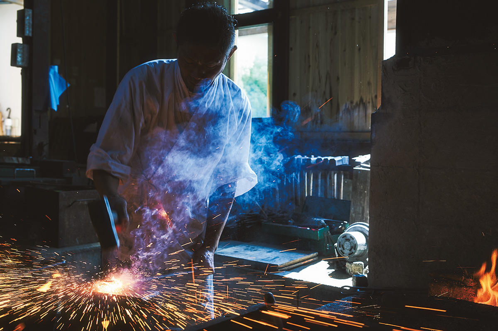
В спальном районе Хасимы стоит кузница, где мастер японских мечей куёт кухонные ножи. Сюда приезжали около 500 иностранцев в год (данные 2021 года), чтобы увидеть, как работает настоящий кузнец, а его нож «Бохи» режет так, что слышен только стук лезвия о доску.
Кузница
Жар за дверью жилого дома
Кузница Asano Kajiya ничем не похожа на привычную картинку. Она стоит среди жилых домов в городе Хасима на юге префектуры Гифу: у ворот осенью кружатся жёлтые листья гинкго, с улицы доносятся голоса школьников. Но стоит шагнуть в полутёмный цех, и попадаешь в мир огня. Гудят мехи, ручной поддув, который раздувает угли, сталь раскалена примерно до 700 градусов, а у горна стоит мастер в белых одеждах.
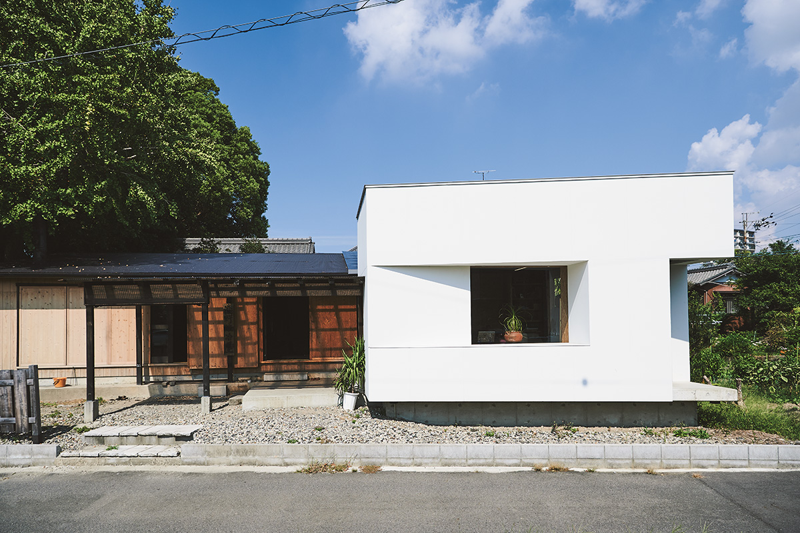
Мастер мечей Таро Асано работает под кузнечным именем Фусатаро. Несмотря на всю торжественность обстановки, о своём деле он говорит легко и с юмором.
«Asano Kajiya хочет быть командой, которая развлекает: впечатляющие показы ковки и радость от того, как режет хороший клинок, вот что для нас главное»
Таро Асано
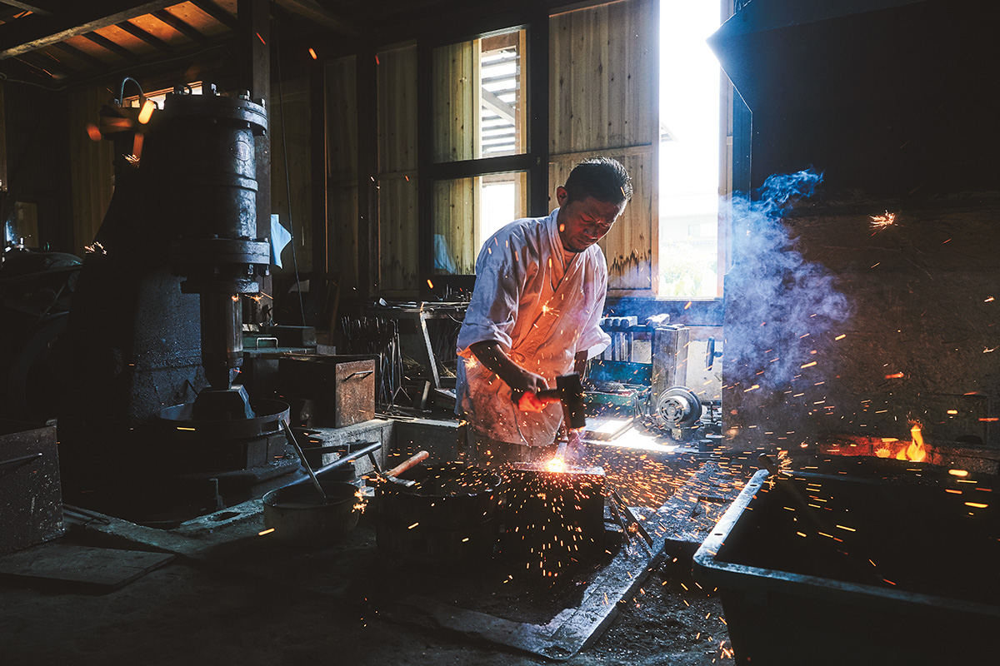
Девиз мастерской звучит так: «Всё, что связано с кузницей, должно быть зрелищем». Поэтому здесь много показательной ковки и мастер-классов, а главным мерилом для любого ножа служит одно: удивится ли тот, кто возьмёт его в руки.
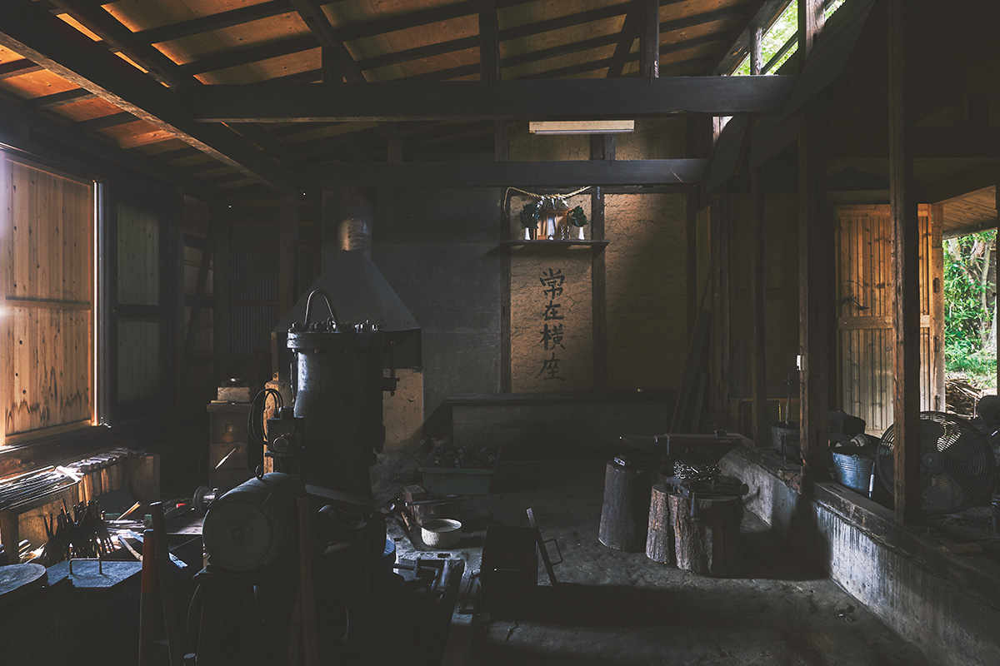
Путь
Настоящая «низкая технология»
Показывать «настоящего кузнеца мечей» Таро Асано начал почти сразу, как стал работать сам: ездил в США и Францию и проводил там мастер-классы по ковке. Это окупилось. В 2021 году в Asano Kajiya приезжали около 500 иностранцев в год.
«Особенно много людей из сферы информационных технологий. Говорят: хотим понять, какая настоящая низкая технология лежит в основе высоких. Мне и самому это помогло заново понять, чего стоит ремесло кузнеца мечей»
Таро Асано
Но главное дело мастер видит в другом: он хочет собрать кузнецов в слаженную команду.
«Обычно ученик кузнеца мечей не получает денег. За это время он учится понимать, что скромная работа, уборка или колка угля, ценна так же, как и ковка, которая выглядит эффектно. Но если ученику не на что жить, команды не соберёшь. Поэтому у нас после года без оплаты ученик начинает ковать ножи. Я хочу, чтобы молодые мастера, у которых появились и навык, и интерес к делу, как можно раньше смогли вести ремесло дальше»
Таро Асано
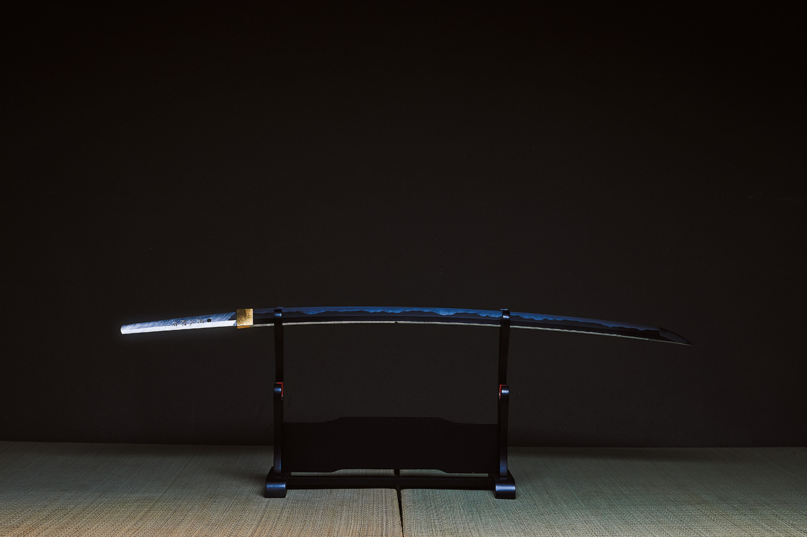
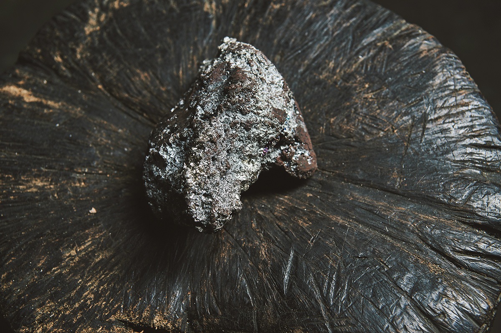
Нож
«Бохи»: клинок, похожий на короткий меч
Лезвие блестит, а узор на нём напоминает капли дождя на листе лотоса. Нож так похож на японский меч, что берёшь его в руки с опаской. Но стоит приложить лезвие к продукту, и слышен только мягкий стук о доску. Нож идёт так гладко, что забываешь, что режешь, и от напряжения остаётся одна лёгкость.
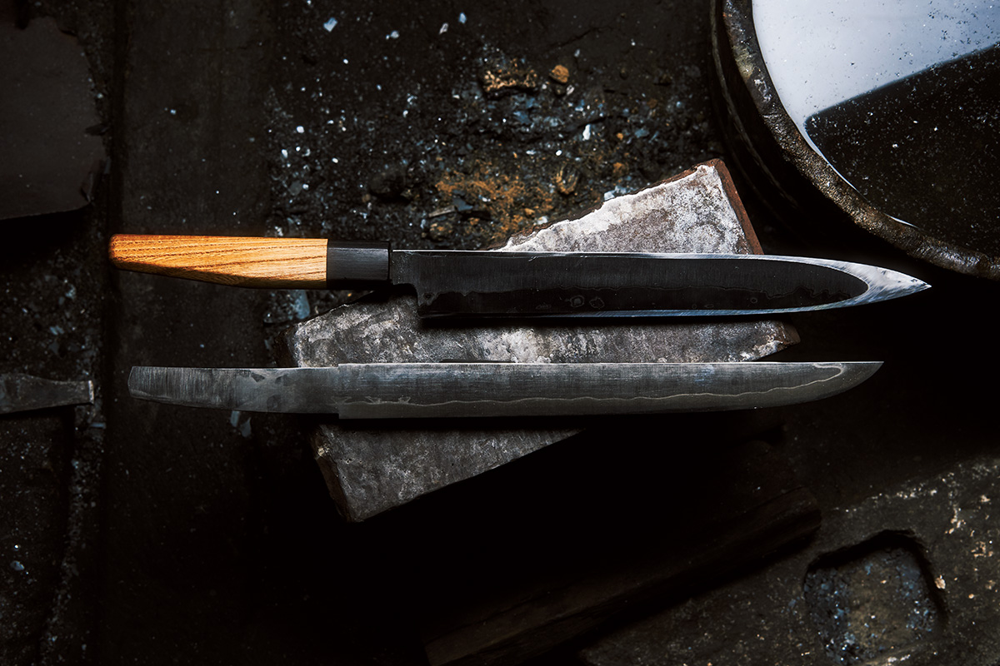
«Бохи» не похож ни на японские, ни на европейские ножи. Название он получил от желобка на японском мече, который вырезают, чтобы сделать клинок легче. Нож появился в 2019 году, и его цель одна: резать лучше всех ножей в мире. При всей остроте делали его для обычной домашней кухни.
Основой стала серия ASANOKAJIYA CLASSIC. По словам мастера, эти ножи сочетают удобство и остроту, но с очень вязкими продуктами, например с выдержанной рыбой, справлялись не лучшим образом. Для «Бохи» мастер полностью сменил задачу.
«Чтобы нож хорошо резал, проще всего сделать кромку тоньше, но тогда он легко ломается. Здесь нужна высокая техника ковки. Мы отбиваем заготовку, которая, так совпало, получилась точь-в-точь как короткий меч, утолщаем обух и вытягиваем её так, чтобы в сечении вышел равнобедренный треугольник. Затем, как вогнутую обратную сторону у ножа янагиба, мы снимаем металл с обеих сторон, и вперёд выступает тонкая кромка. Без ручного молота такую форму не сделать»
Таро Асано
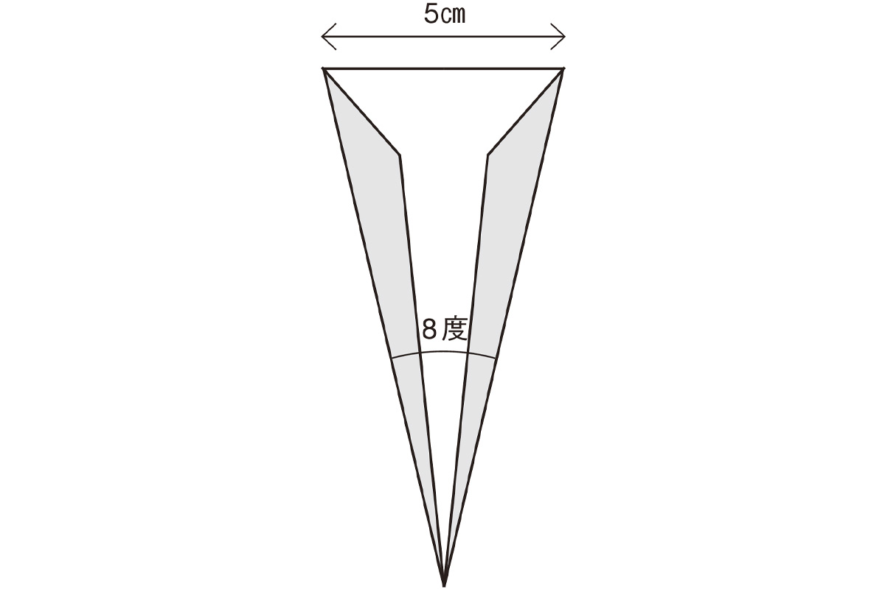
Острое лезвие проходит сквозь продукт и не давит его клетки.
«Нож не разрушает клетки, не выпускает горечь и кислоту. Можно сказать, это нож, который проявляет к продукту предельное уважение»
Таро Асано
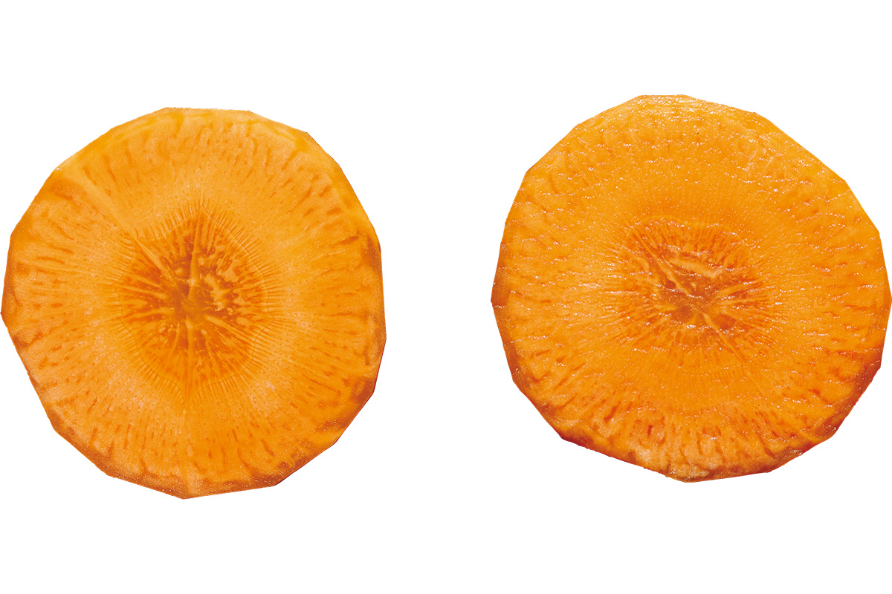
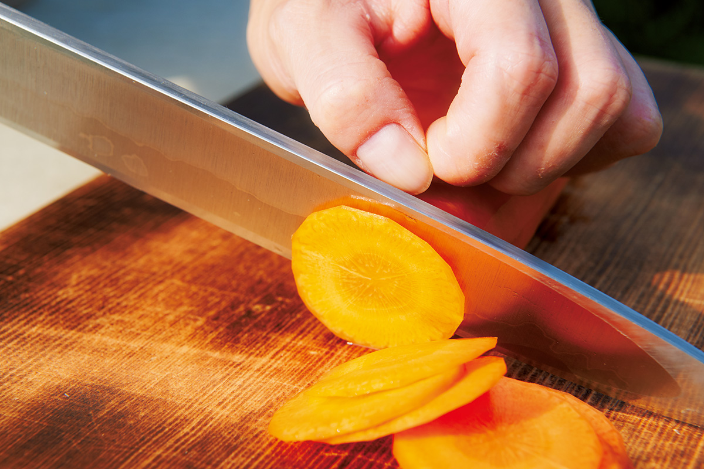
В 2019 году «Бохи» выпускали трёх размеров: с клинком 300 мм за 165 000 иен, 240 мм за 132 000 иен и 180 мм за 110 000 иен. Сталь трёхслойная: в середине белая углеродистая сталь «сирогами», снаружи нержавеющая.
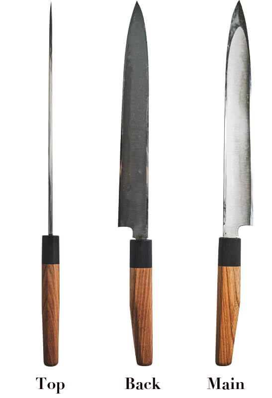
Ковка
Сталь помнит, с каким настроем по ней били
На словах всё просто, но ковать такой нож очень трудно. Даже первый шаг, ровный нагрев стали, требует знать сосновый уголь и мехи досконально.
«Раскалить сталь мехами и ковать: процесс простой на вид, но от того, как обращаешься с металлом, зависят качество и прочность стали. Для „Бохи“ нужны и точная температура, и правильная ковка. Японский меч, где тамахаганэ складывают и получают больше 30 000 слоёв, конечно, ковать намного сложнее, но и ковка „Бохи“ не уступает ей по уровню»
Таро Асано
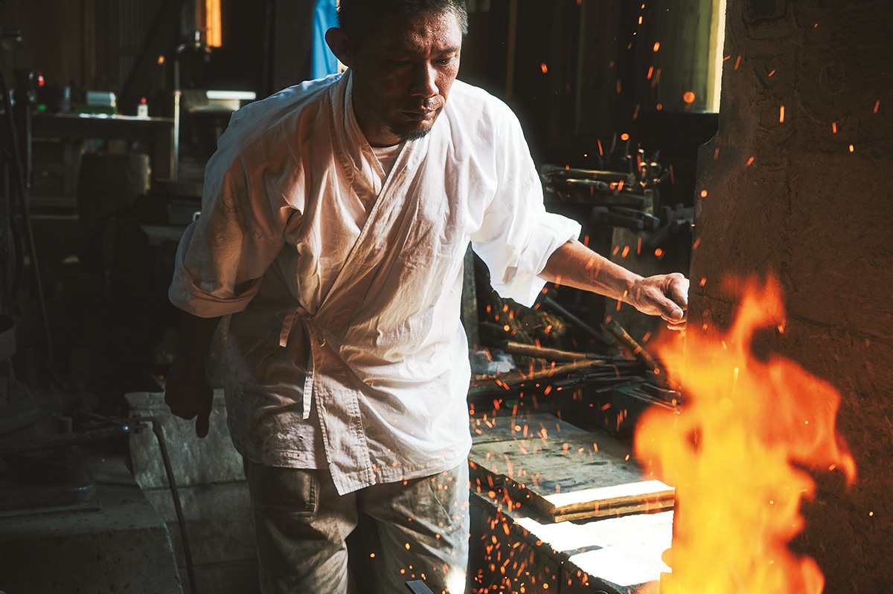
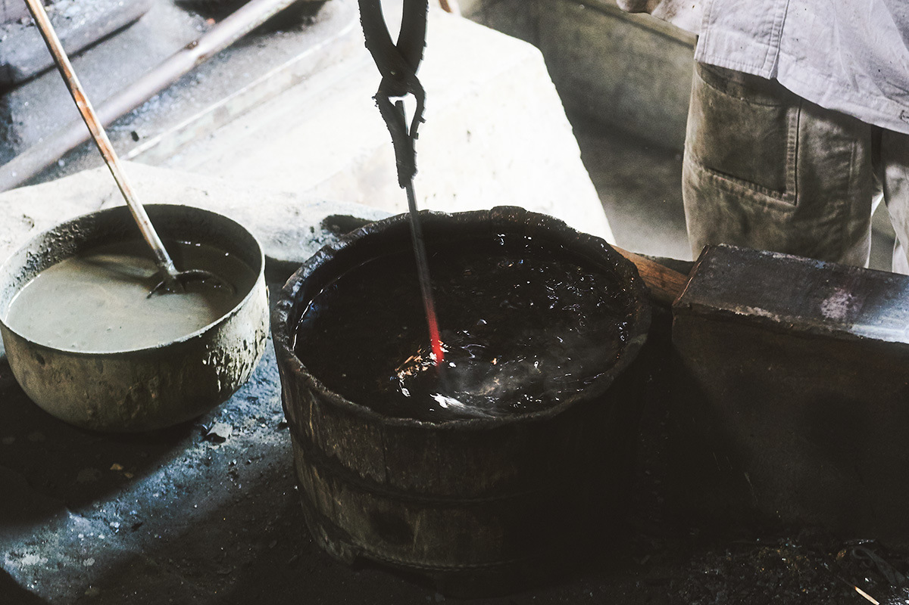
Мастер отковал два куска одной стали по-разному и показал срезы. В металле, по которому били со злостью и в полную силу, структура получилась грубой. В том, который ковали спокойно, плотной и мелкой.
«Видите? Ковать значит управлять железом на уровне молекул. И с каким чувством ты бьёшь, так и меняется строение металла»
Таро Асано
Одно неверное движение, и кромка раскрошится. Но одной техникой хороший нож не сделать: всё решает настрой кузнеца.
«Мой учитель говорил: „Куй меч и думай о мире во всей стране“. Кузницу мечей издавна сравнивают с земледелием. Урожай растят солнце, вода и земля, а в кузнице меч и нож куют ветер, огонь и сила тяжести. Самураи понимали этот смиренный настрой мастеров и потому носили меч не для драки, а чтобы защищать господина, как опору для души»
Таро Асано
Мастер ритмично стучит молотом по холодной стали, которую не грел в горне, и она понемногу начинает краснеть. Когда металл разогрелся, он подносит к нему спичку, и та вспыхивает. «Так мы зажигаем первый огонь в новом году и первый огонь для нового меча. Для нас это священный огонь».
Японский меч в древности был предметом обрядов, вместилищем божества. Привычный японский меч появился в эпоху Хэйан: сначала длинный тати для боя верхом, потом катана для пешего воина. У каждой эпохи свой стиль, а меч ценят прежде всего как произведение искусства.
Классика
Ножи для дома и столовые приборы
Серию ASANOKAJIYA CLASSIC выпустили в 2017 году. В 2021 году мастер ковал всего 240 таких ножей в год, параллельно с мечами. Делают их из «сирогами», самой богатой углеродом ножевой стали, и ученики нередко с ней мучаются. Ножи прозвали «самурайскими», и благодаря им кузница мечей, далёкая от домашней жизни, стала ближе людям.
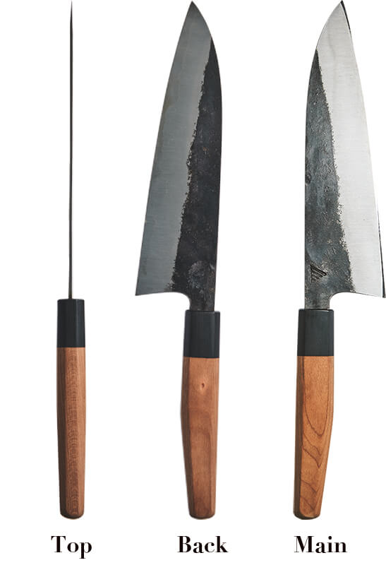
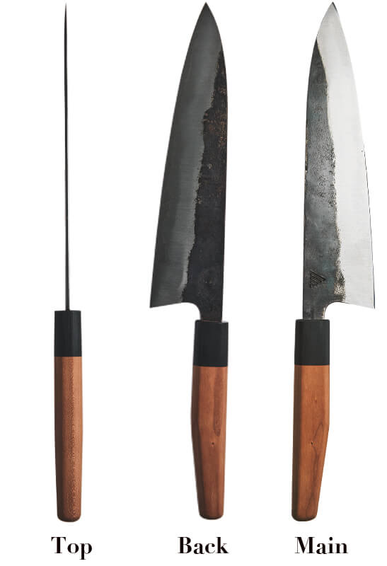
Сантоку подходит почти для любых продуктов, а трёхслойная сталь меньше ржавеет. Гюто длиннее, при скользящем движении он оставляет на мясе и рыбе красивый срез, справляется с овощами и может стать главным ножом на кухне. Ростбиф им тоже режется ровно.
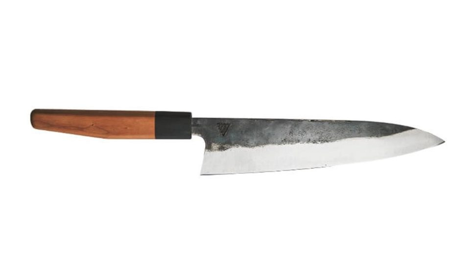
Рядом с ножами кузница куёт и столовые приборы, которые выпускают с 2017 года. Прессом такие не сделать: в них есть мягкость деревянных приборов, линия, которая сама ложится в руку, и красивые следы молота. Нож из набора, конечно, режет отлично.
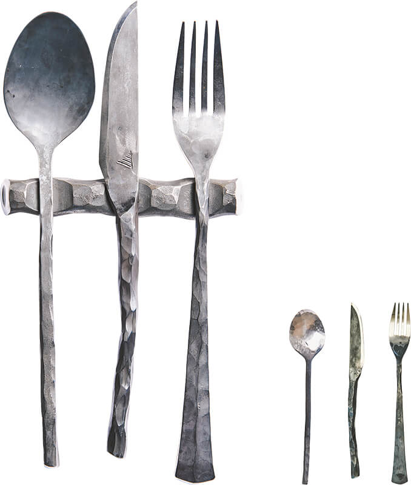
В 2024 году у гюто и сантоку клинок 185 мм, рукоять 135 мм. Они красивы ещё до того, как возьмёшь их в руки, а лёгкая округлость рукояти удобно ложится в ладонь.
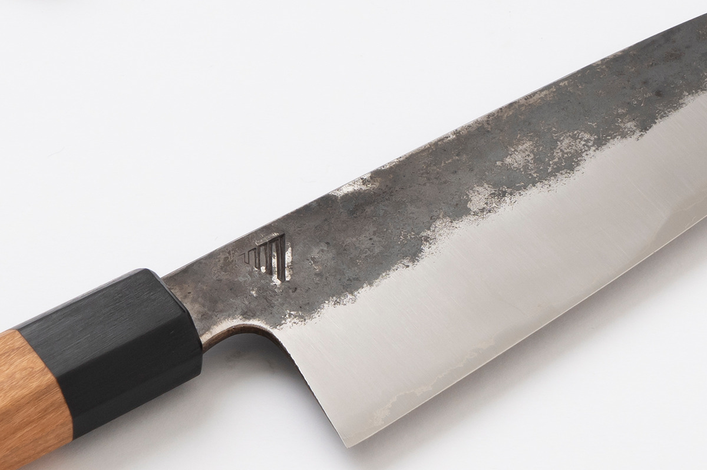
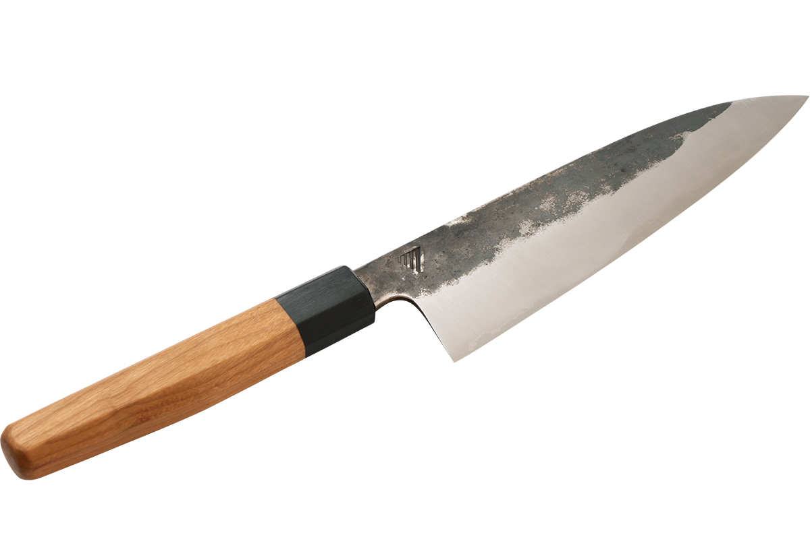
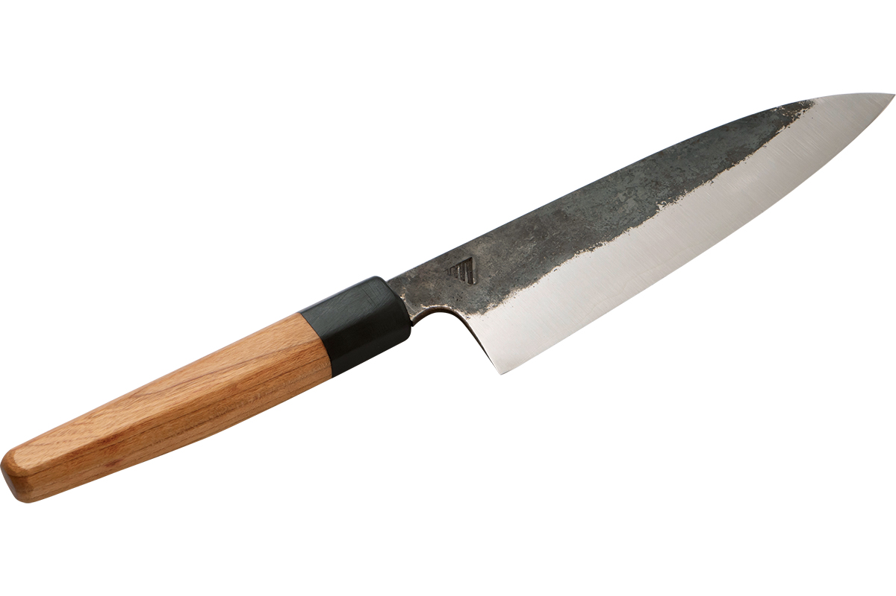
Нож Happa родился из вопроса, можно ли сделать нож милым и удобным. Его покрытие с фотокатализатором само себя очищает, так что он всегда чистый, и его удобно брать в поход. Размер 204 × 65 × 15 мм, вес 95 г, в 2024 году он стоил 15 620 иен.
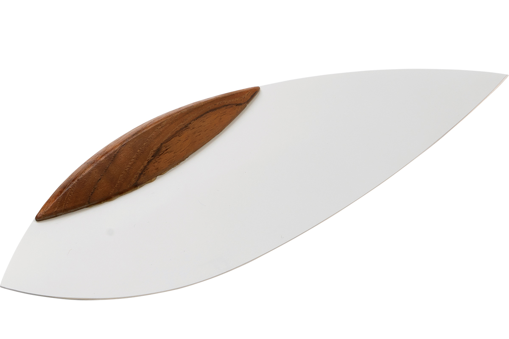
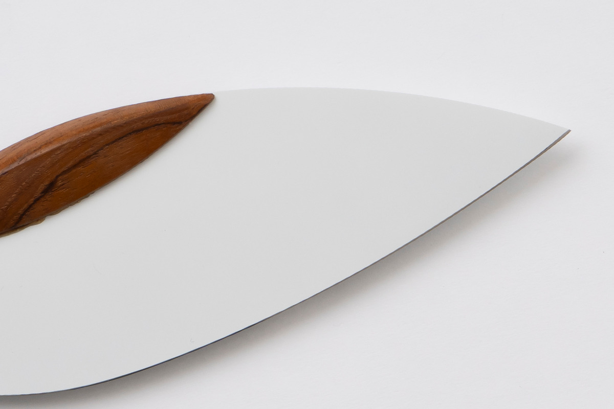
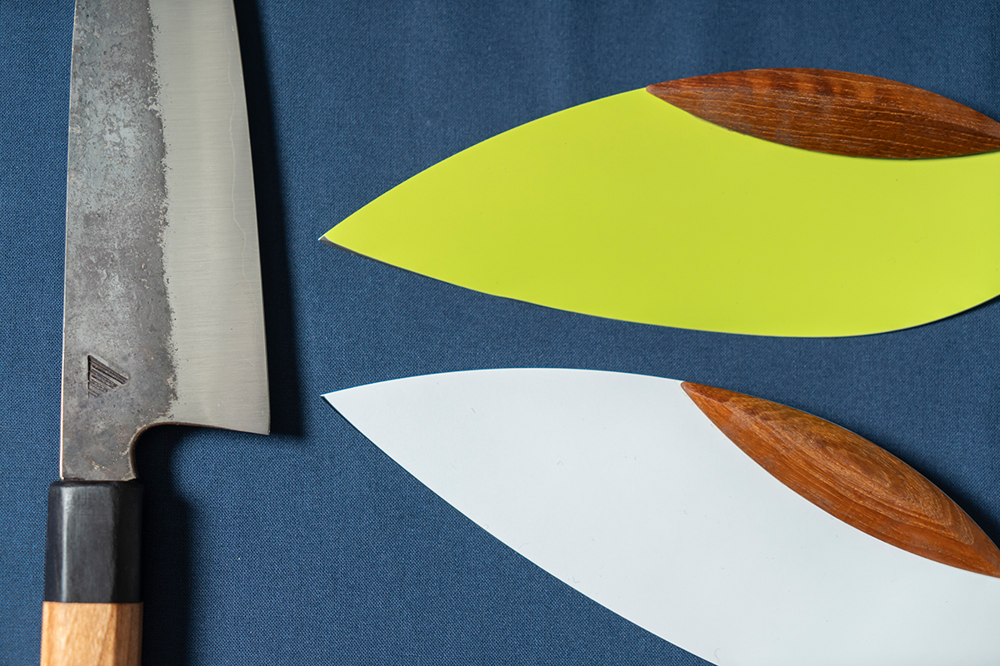
Asano Kajiya
- Адрес
- префектура Гифу, Хасима, Эгира-тё, 454-1
- Телефон
- +81 58-374-3818
- Сайт
- asanokajiya.com
Фото: Кадзума Такигава, Кадзуя Хаяси.